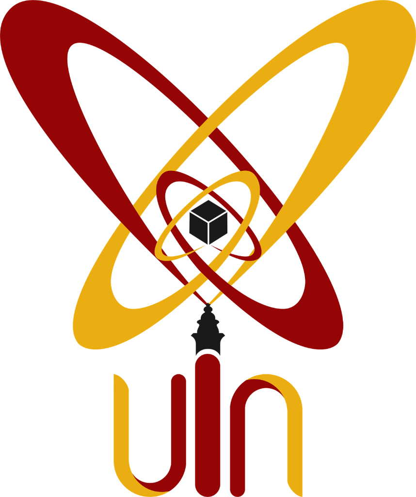

minat saya terhadap ai terutama yang di bikin nvidia
Hubungi SayaSaya adalah mahasiswa Program Studi Informatika di Fakultas Sains dan Teknologi, UIN Sultan Maulana Hasanuddin Banten, yang memiliki ketertarikan mendalam pada pengembangan solusi perangkat lunak berbasis web dan arsitektur data. Fokus utama saya adalah merancang dan membangun sistem informasi yang terstruktur, efisien, dan responsif untuk menjawab kebutuhan operasional secara nyata.
Sebagai pengembang web, spesialisasi saya berfokus pada ekosistem Laravel dan pengembangan aplikasi full-stack modern. Keahlian utama saya meliputi:
Spesialisasi & Tech Stack Inti
Sebagai Full Stack Web Developer, spesialisasi saya ada pada pengembangan sistem menggunakan PHP dengan framework Laravel dan CodeIgniter. Keahlian utama saya meliputi:
Kontribusi Profesional
Saya bertanggung jawab penuh atas siklus pengembangan sistem informasi internal perusahaan. Kontribusi utama saya mencakup pembuatan Sistem Administrasi Operasional (ERP/SAGA), Sistem Pelatihan E‑Learning, Sistem Monitoring dan Dashboard (Produksi, E‑commerce, Workshop Detailing), serta pengembangan Website Self‑Service dan Company Profile. Semua solusi tersebut bertujuan meningkatkan efisiensi operasional dan mendukung pengambilan keputusan berbasis data.

UIN Banten – Fakultas Sains dan Teknologi – Informatika (2023 – Sekarang)Teknologi: Laravel (PHP), MySQL/SQLite.
Fungsi: Sistem informasi manajemen laboratorium yang mencakup fitur CRUD terstruktur, pencatatan riwayat aktivitas pengguna (log activity tracking), serta manajemen autentikasi dan session.
Teknologi: RDF/Turtle (perpustakaan.ttl), RDFS, OWL, Apache Jena Fuseki, SPARQL.
Fungsi: Pemodelan pengetahuan dan basis data semantik untuk entitas buku, penulis, anggota, petugas, dan kategori perpustakaan beserta pengujian query relasional via Fuseki.
Teknologi: Node.js, Hapi.js.
Fungsi: Membangun layanan backend dan endpoint API untuk pengelolaan data aplikasi web.
Teknologi: Laravel, Livewire, Filament, Blade, Tailwind CSS, Alpine.js.
Fungsi: Pembuatan admin panel dan antarmuka dashboard modern (termasuk eksperimen desain tema gelap).
Email: irfanfauzan458@gmail.com